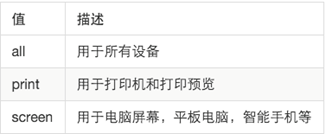
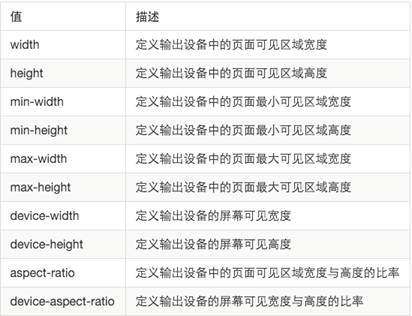
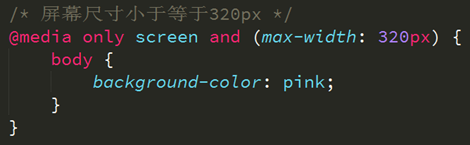

设备终端的多样化，直接导致了网页的运行环境变的越来越复杂，为了能够保证我们的网页可以适应多个终端，不得不专门为某些特定的设备设计不同的展示风格，通过媒体查询可以检测当前网页运行在什么终端，可以有机会实现网页适应不同终端的展示风格。
将不同的终端设备划分成不同的类型，称为媒体类型

每种媒体类型都具体各自不同的特性，根据不同媒体类型的媒体特性设置不同的展示风格。

关键字将媒体类型或多个媒体特性连接到一起做为媒体查询的条件。
1、and 可以将多个媒体特性连接到一起，相当于“且”的意思。
2、not 排除某个媒体类型，相当于“非”的意思，可以省略。
3、only指定某个特定的媒体类型，可以省略。
1、link方法
<link href="./5-1.css" media="only screen and (max-width: 320px)">
2、@media方法（写在CSS里）

1、width / height完全等于layout viewport
2、max-width / max-height 小于等于layout viewport
3、min-width / min-height 大于等于layout viewport
4、device-width / device-height 完全等于ideal viewport
5、orientation: portrait | landscape肖像/全景模式